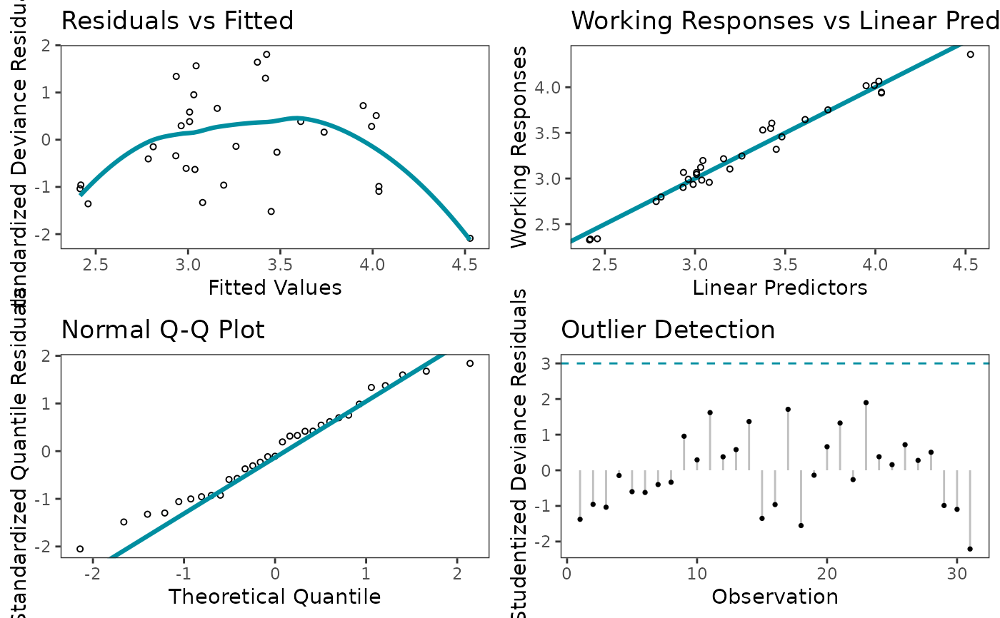
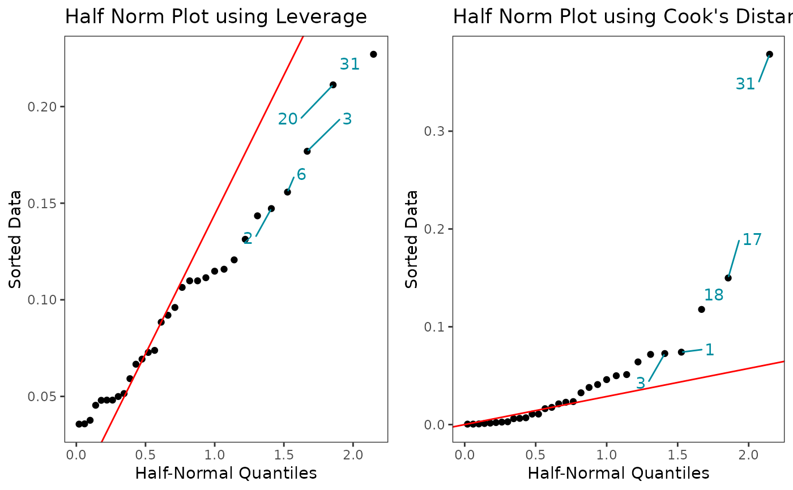
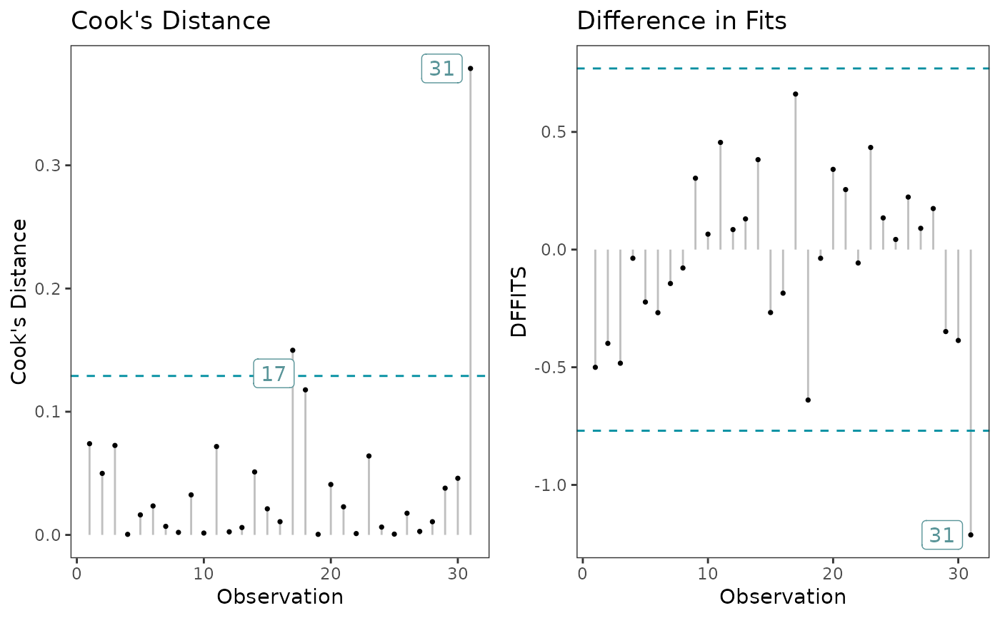
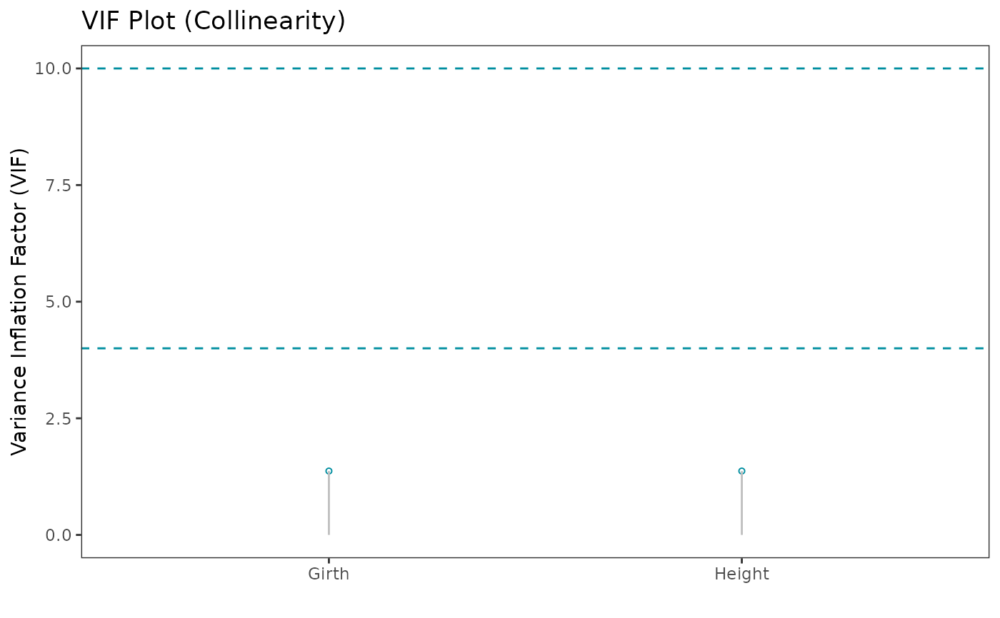

GLM Diagnostic Plots with ggplot2
Usage
glm_diagnostic_plots(
model,
discrete_edm,
which_plots = 1:4,
cooksD_type = 1,
standard_errors = FALSE,
point_size = 1.1,
theme_color = "#008EA0FF",
n_columns = 2
)Arguments
- model
Model of class "glm"
- discrete_edm
Logical value to exclusively specify if a discrete EDM is chosen to build model. Quantile residuals are used instead of Deviance/Pearson residuals for the plots for Discrete EDMs
- which_plots
Choose which diagnostic plots to choose from.
Options are 1 = "Residuals vs Fitted"; 2 = "Working Responses vs Linear Predictors"; 3 = "Normal Q-Q"; 4 = "Outlier Detection"; 5 = "Half norm plot using leverages"; 6 = "Half norm plot using Cook's Distance"; 7 = "Cook's Distance"; 8 = "DFFITS"; 9 = "VIF"- cooksD_type
An integer between 1 and 4 indicating the threshold to be computed for Cook's Distance plot. Default is 1. See details for threshold computation
- standard_errors
Display confidence interval around geom_smooth, FALSE by default
- point_size
Change size of points in plots
- theme_color
Change color of the geom_smooth line and text labels for the respective diagnostic plot
- n_columns
number of columns for grid layout. Default is 2
Details
Check the assumptions for the systematic component of the GLM:
Plot 1: If any trends appear, then the systematic component can be improved. This usually involves doing 1 or a combination of the following: (1) changing the link fucntion, (2) adding new predictor variables, and/or (3) transforming the current predictor variables in the model.
Plot 2: If plot is not roughly linear, then another link function might be more appropriate.
Check the assumptions for the random component - EDM distribution - of the GLM:
Plot 3: If most points are NOT close to the line, then the EDM distribution may not be appropriate. The quantile residuals are used since they have an exact normal distribution if the appropriate EDM has been chosen.
Check for outliers and influential points:
Plot 4: If |residual| > 3, then the observation is flagged as an outlier.
Plot 5 & 6: Observations that deviate greatly from the rest of the data are potential outliers. It is not necessary that all points fall on the red line since the leverages and cook's distance values are not strictly expected to have a postive normal distribution. The 5 observations with the largest values are labelled on each plot.
Plot 7: Check for outliers with Cook's Distance. A data point having a large Cook's distance indicates that the data point strongly influences the fitted values of the model. The default threshold used for detecting or classifying observations as outliers is \(4/n\) (i.e cooksD_type = 1) where \(n\) is the number of observations. The thresholds computed are as follows:
cooksD_type = 1: 4/n
cooksD_type = 2: 4/(n-p-1)
cooksD_type = 3: 1/(n-p-1)
cooksD_type = 4: 3 * mean(cook's distance values)
where \(n\) is the number of observations and \(p\) is the number of predictors.
Plot 8: Check for outliers with DFFITS, which considers how much the fitted value of observation i changes between the model fitted with all the data and the model fitted with obervation i omitted. If |DFFITS| > \(2 * sqrt((parameters + 1) / (observations - parameters - 1))\), then the observation is flagged as influential.
Check for collinearity:
Plot 9: Check for collinearity with the variance inflation factor (VIF). Tolerance = \(1 - R_j^2\), VIF = \(1 / Tolerance\), where \(R_j^2\) is the coefficient of determination of a regression of predictor j on all the other predictors. A general rule of thumb is that VIFs exceeding 4 warrant further investigation, while VIFs exceeding 10 indicates a multicollinearity problem.
References
Weisberg, S.: Applied Linear Regression. John Wiley and Sons, New York (1985)
Pierce, D.A., Shafer, D.W.: Residuals in generalized linear models. Journal of the American Statistical Association 81, 977–986 (1986)
Williams, D.A.: Generalized linear models diagnostics using the deviance and single-case deletions. Applied Statistics 36(2), 181–191 (1987)
McCullagh, P., Nelder, J.A.: Generalized Linear Models, second edn. Chapman and Hall, London (1989)
Dunn, P.K., Smyth, G.K.: Randomized quantile residuals. Journal of Computational and Graphical Statistics 5(3), 236–244 (1996)
Dunn, P.K., Smyth, G.K. Generalized Linear Models with Examples in R. Springer Texts in Statistics, 297-327 (2018)
Author
Mo Amiri moamiristat@protonmail.com
Examples
model <- glm(Volume ~ Girth + Height, family = Gamma(link = "log"), data = trees)
# Default plots returned
glm_diagnostic_plots(model, discrete_edm = FALSE, which_plots = 1:4)

# Half norm plots
glm_diagnostic_plots(model, discrete_edm = FALSE, which_plots = 5:6)

# Cook's Distance & DFFITS
glm_diagnostic_plots(model, discrete_edm = FALSE, which_plots = 7:8)

# Collinearity
glm_diagnostic_plots(model, discrete_edm = FALSE, which_plots = 9, n_columns = 1)
